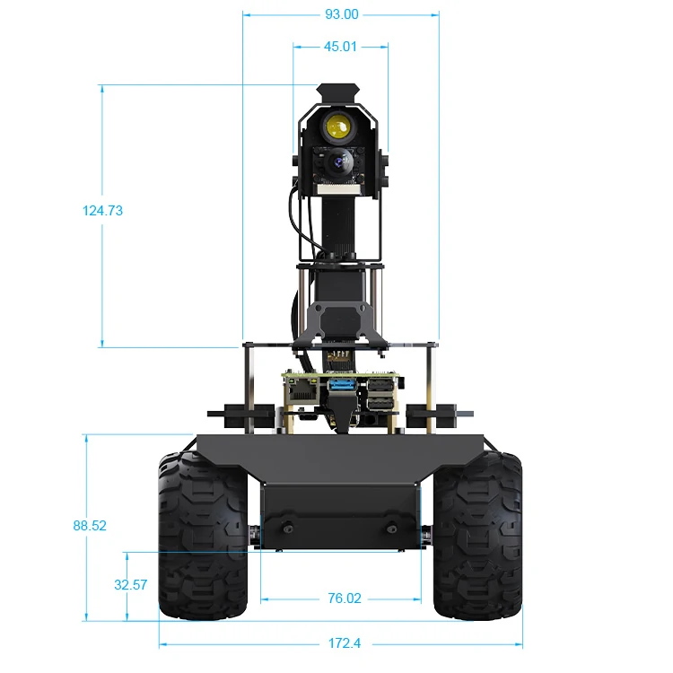
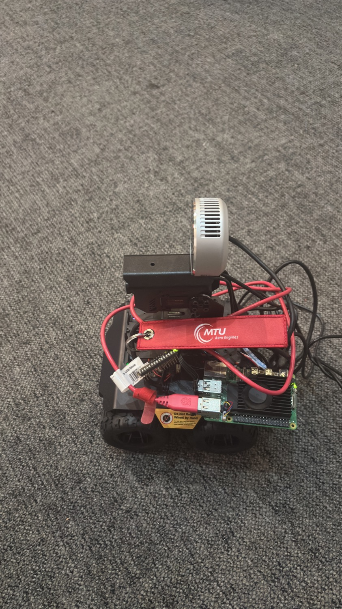
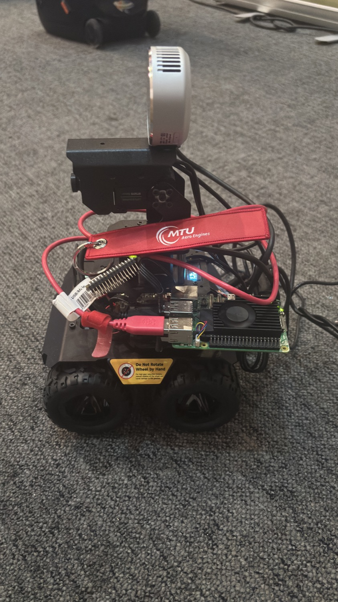
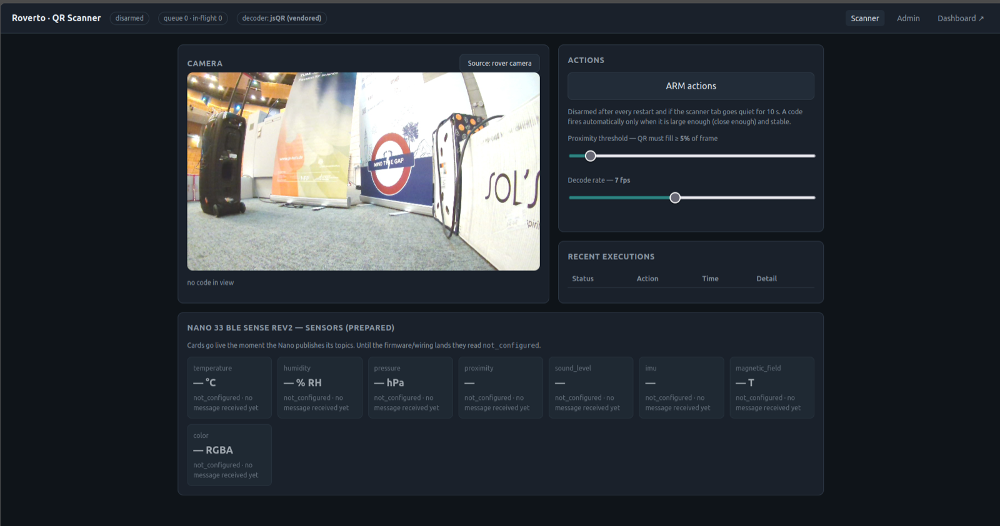

An autonomous rover that maps a room it has never seen — choosing where to look, in real time, through a single 70° depth camera.

The L515 is a depth camera, not a 360° lidar — it sees one forward arc.
Nothing to the sides or rear — every turn into the unknown is a guess.
Frontiers only appear inside the arc, so the map fills in slowly.
Too little scan overlap for loop closure; the pose drifts over time.
Each block is a ROS 2 node; the labels are the topics that connect them.
A Raspberry Pi 5 thinks; an ESP32 moves. They talk over USB serial.


Small corrections, large consequences.
Built the RealSense SDK from source to run the discontinued Intel L515 on ROS 2 Jazzy.
Verified on robotIMU fused with wheel odometry yields one smooth, tracked heading.
Verified on robotMounting the camera on the gimbal lets its frame follow pan and tilt.
A live run on the Pi — no joystick, no scripted path.
Live SLAM in Foxglove · the map grows as Roverto drives itself
Token-validated — Roverto runs only actions it already trusts. Click the image for fullscreen.

The platform is built; the field of view is the next frontier.
Frontier exploration with live SLAM, running end-to-end on the robot.
Pan and tilt the camera to widen coverage without turning the whole body.
RGB-D SLAM (RTAB-Map) to correct the drift a narrow scan can't.